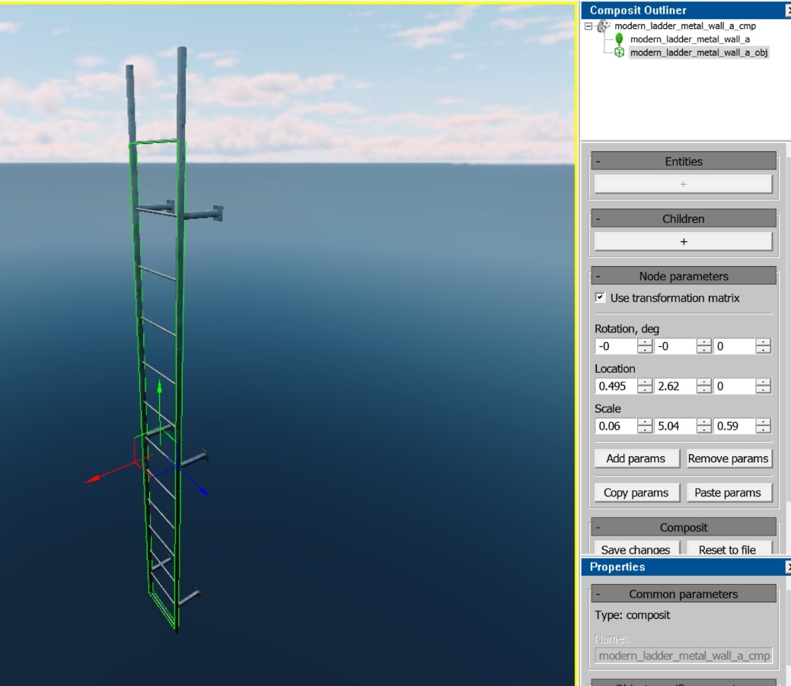
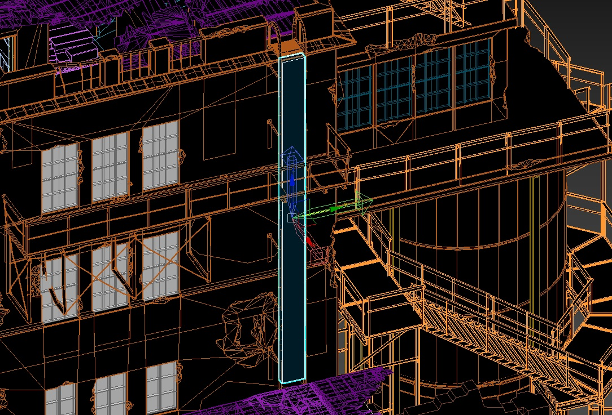

Climbable Ladders
General Overview and Structure
In daNetGame-projects, there is a technology for climbing vertical (or near-vertical) ladders.
Vertical ladders that are part of gameplay (which players can climb) are actually composite objects. They consist of two components:
Visual geometry (
*.dag)Game object (
*ladder.gameObj.blk).
Note
The name of the .blk file must follow the convention with the ladder suffix
and the *.gameObj.blk extension.
Geometry Parameters
The visual geometry has no special distinctive features – everything is standard and straightforward. It’s simply a model of a ladder with a specific number of steps (the number of steps is important as it will be used in the game object).
Important
The only critical point to observe is that the steps must be spaced evenly. Otherwise, the character’s hands and feet may not correctly align with the steps during climbing.
Game Object Parameters
The game object (gameObj) is a procedurally generated object (similar to
wall_holes, indoor walls, etc.). To create it, you need to generate a text
file (*ladder.gameObj.blk) with the description of the ladder:
volumeType:t="box"– the geometric type of the generated gameplay area, similar to meshes, boxes, convex shapes in collisions. We specifically use theboxtype.boxSz:r=0.5– defines the distance from the center to any side of the box. This value represents half the side of a cube, meaning the default value of0.5generates a 1m cube. By default, it’s set to0.5, and we do not change this. It has minimal impact since the size of the box will later be defined by the matrix in the composite object (as ladders are not cubic in shape).isLadder:b=yes– specifies that this game object is a ladder.ladderStepsCount:i=14– the number of steps (this is important as it affects the character’s hand and foot placement on the actual ladder geometry).
The actual size of the game object is determined in the composite object via its matrix, which integrates the visual geometry with the game object. This allows the game object to match the proportions required for the specific ladder.
Creating the Ladder Game Object
General Guidelines
You do not necessarily need to create a new game object. You can reuse an existing one by transforming it within the composite object to fit your ladder.
Note
However, it’s crucial to remember that the game object contains a predefined number of steps, which must not be altered. Changing it would break the ladders where this object is already in use. If the step count does not suit your needs, create a new object.
Avoid modifying the default cube size (
boxSz:r=0.5, i.e., 1m per side). If, for any reason, you decide to change this value, you must ensure that the size is adjusted accordingly when creating the composite object in 3ds Max (discussed below). Otherwise, the results in 3ds Max and Asset Viewer will not match.It doesn’t matter whether the ladders are standalone objects or part of a building – each case is unique. If a ladder is used multiple times, it makes more sense to have it as a separate object. If the ladder is unique to a specific building, it can remain part of the building’s geometry (consider optimization, LODs, etc.).
The technology remains the same – each ladder must have a game object added to it via the composite object.
It’s best to store
*ladder.gameObj.blkalongside the visual geometry.Unless required for gameplay, avoid adding collision to every step in the physics system. The physical collision does not interact with the climbing animation – it only collides with the capsule.
The game object should span from the bottom step to the top step. Otherwise, there may be incorrect hand and foot positioning.
An example using the wood_ladder_a model is shown here:
{kind=link}
{kind=link}
{kind=link}
Note
As of July 2023, the system is set up so that the character can only climb from the X side of the game object. Climbing from other sides may not work or may behave incorrectly.
{kind=link}
Methods for Creating the Game Object
Method 1
In the 3ds Max scene, create a cube with dimensions 1x1x1m, with its pivot point at the center. If you’ve changed the size of
boxSz:r=0.5, you need to adjust the cube size accordingly.Scale the cube to match the dimensions of the ladder.
Export the composite object (ladder + game object) using available tools (such as dag2rires).

{kind=link}
{kind=link}
{kind=link}